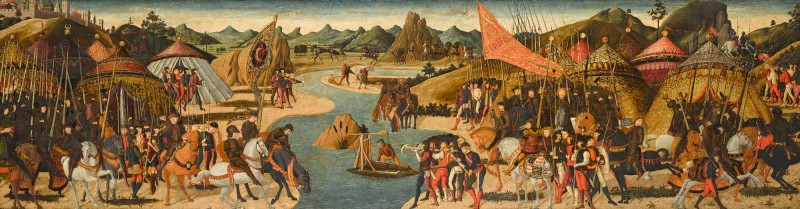

La Bataille du Métaure

Le contexte
En 207 av. J.-C., Hannibal est en Italie depuis 11 ans. Il n'a jamais réussi à prendre Rome directement, et ses troupes commencent à s'épuiser. Son frère Hasdrubal Barca décide alors de traverser les Alpes à son tour avec une armée fraîche pour rejoindre Hannibal et l'aider à frapper Rome.
Si les deux frères réussissent à unir leurs forces, Rome est perdue. Les Romains le savent et font tout pour empêcher cette jonction.
Source : Wikipedia — Bataille du Métaure
La bataille
Les consuls romains Néron et Livius interceptent Hasdrubal avant qu'il puisse rejoindre Hannibal. Hasdrubal tente de traverser la rivière Métaure pour échapper aux Romains, mais il se retrouve coincé. La bataille éclate sur les rives de la rivière.
Pendant qu'une partie de l'armée romaine retient les troupes d'Hasdrubal de face, Néron contourne discrètement l'armée carthaginoise et attaque par derrière. Hasdrubal, pris en tenaille, voit la bataille basculer. Refusant d'être capturé, il charge seul dans les lignes romaines et meurt au combat.
Source : Wikipedia — Bataille du Métaure
Le tournant de la guerre
Les Romains coupent la tête d'Hasdrubal et l'envoient rouler dans le camp d'Hannibal. C'est ainsi qu'Hannibal apprend la mort de son frère et la destruction de ses renforts. Selon les historiens, il aurait dit en voyant la tête : "Je reconnais là le destin de Carthage."
La bataille du Métaure est le vrai tournant de la deuxième guerre punique. Hannibal ne recevra plus jamais de renforts suffisants. Isolé en Italie, il ne peut plus gagner la guerre. Rome reprend peu à peu l'initiative et Scipion prépare déjà son attaque en Afrique.
Source : Wikipedia — Bataille du Métaure